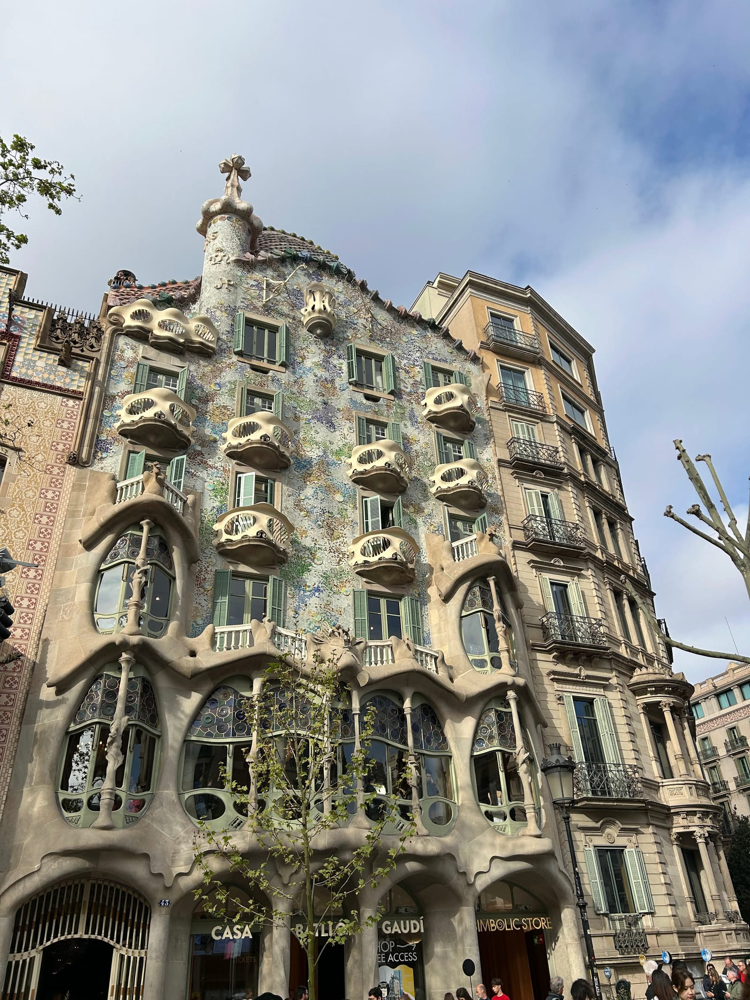
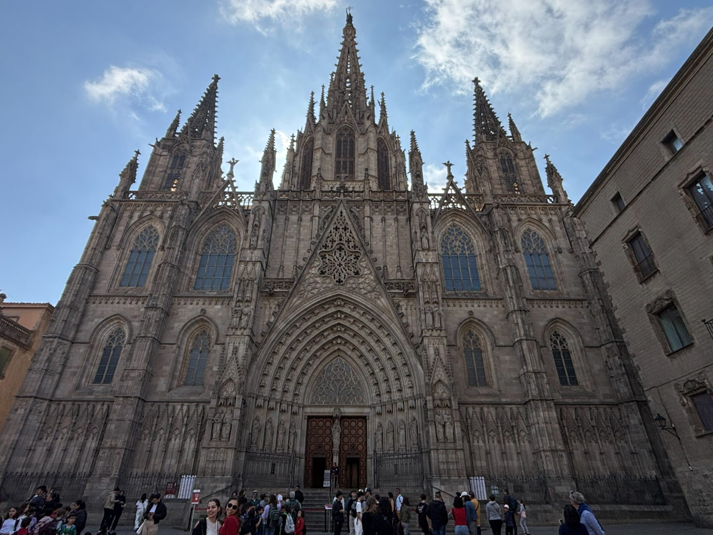

BARCELONA
Tuesday (Travel)
- Left immediately after film class and brought food we bought the day before at Edeka for dinner
- Took off around 9:00 and got to the Airbnb at 12:40 but the host said she'd be there in 15 minutes after we clearly communicated all night exactly when we would be there and she agreed to meet us then
Wednesday (Barcelona)
- Got up at 8:30 and went to the Gaudí houses

- Casa Batlló, Casa Mila, Casa Amatller
- Cool funky houses
- Walked to Mercat de la Boqueria
- Ate a few empanadas and fries with kiwi juice and mango juice
- Walked through La Rambla and the Gothic Quarter

- Catedral de Barcelona was nice on the outside
- Got ice cream and walked through Parc de la Ciutadella
-
1 / 2
- Nice park but it was under construction
- Took a rest on a bench for a while
- Went to the Barcelona Zoo
-
1 / 2
- Good zoo, took our time and Mahathi napped partway through
- Saw the Arc de Triomphe
-
1 / 2
- Went to Mercadona for OJ and snacks before La Sagrada Familia
-
1 / 3
- Busy but they let us in early so we got through quicker than we expected
- Looked really nice with the sun hitting the stained glass in the evening
- Ate at Bar Bodega Costa Brava
- Good food and the waiter was super nice to us and helped a lot
- Walked up to Parc Guell at 7:30 and walked around up there
-
1 / 2
- Couldn't watch the sunset from there, hill and trees in the way
- Stopped at a grocery store for OJ and a breakfast for our early morning
- Went home, packed, and slept
Thursday (Travel)
- Got up at 3:50 and got ready before getting in our scheduled Uber to the airport for our 6:35 flight back
- Got back and got ready for school